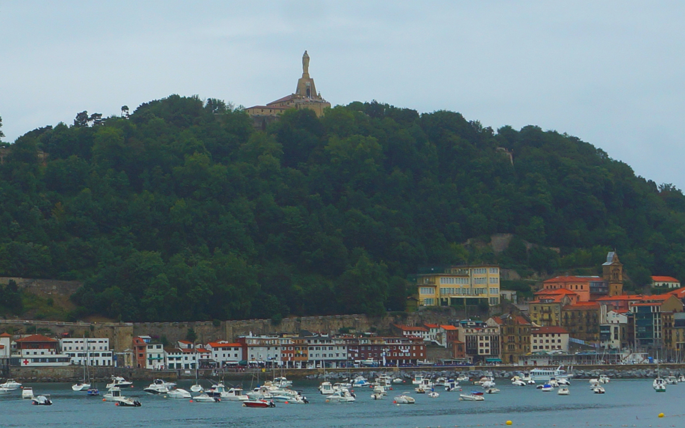
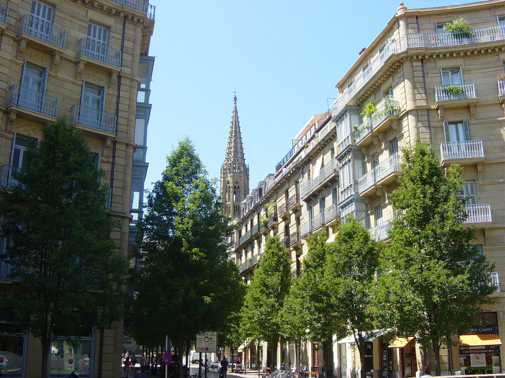
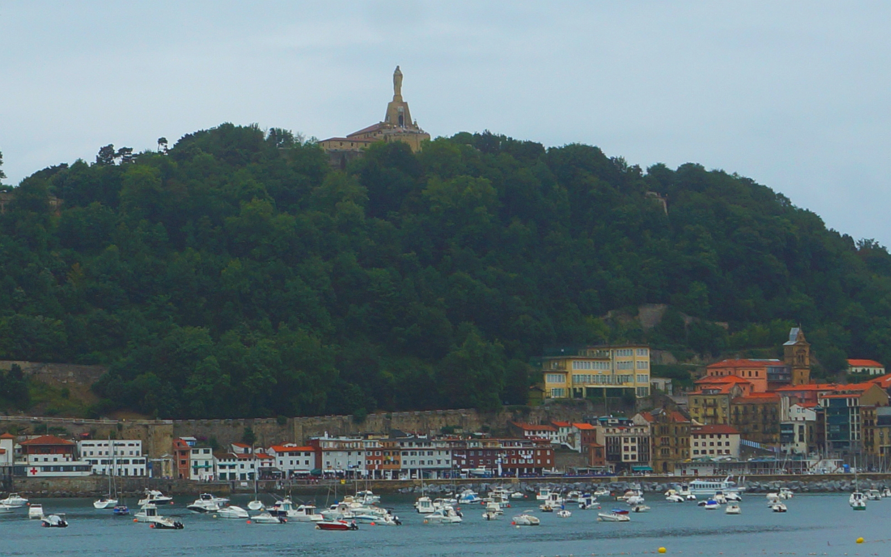
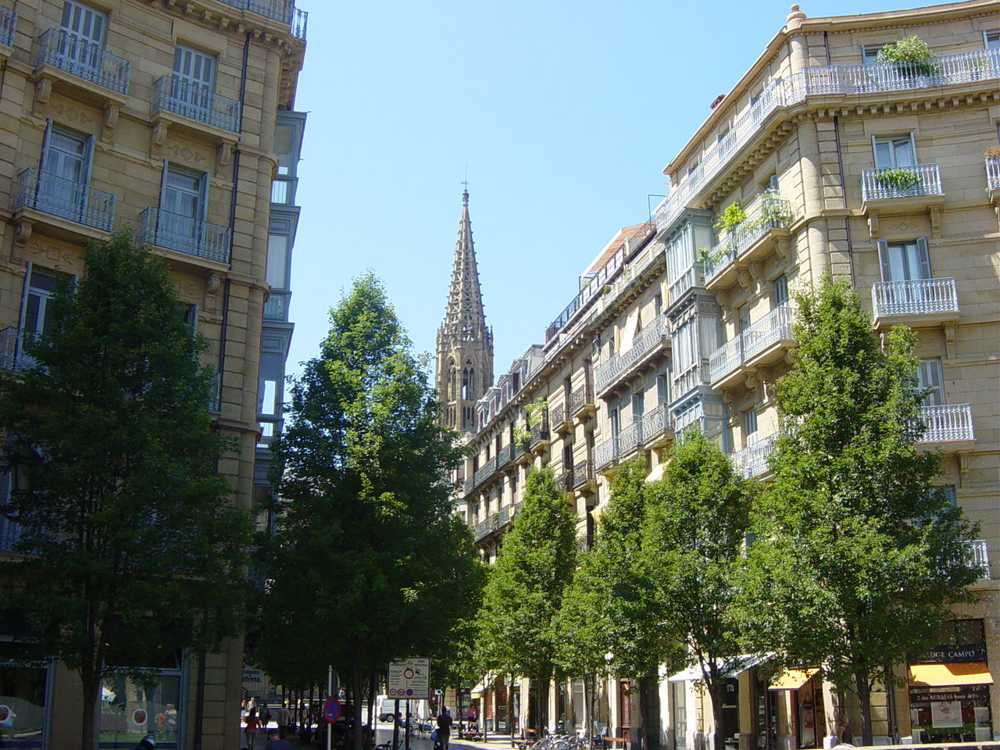

Donostia is renowned for its Basque cuisine. San Sebastián and its surrounding area is home to a high concentration of restaurants boasting Michelin stars including Arzak (San Sebastián), Berasategi (Lasarte), Akelarre (district Igeldo) and Mugaritz (Errenteria), to mention but a few. It is the city with the second most Michelin stars per capita in the world, only behind Kyoto, Japan. Additionally, based on the 2013 ranking, two of the w orld's top ten best restaurants can be found here. Adding to these cooking highlights, the city features tasty snacks similar to tapas called pintxos, which may be found at the bars of the Old Quarter.
Each summer the city plays host to a well known cycling race, the one-day Clásica de San Sebastián ("San Sebastián Classic"). Cycling races are extremely popular in Spain, and the Clásica de San Sebastián professional is held during early August. It has been held annually in San Sebastián since 1981. The race is part of the UCI World Tour and was previously part of its predecessors UCI ProTour and UCI Road World Cup. A women's version of the race has been held since 2019.
Every year on 20 January (the feast of Saint Sebastian), the people of San Sebastián celebrate a festival known as the "Tamborrada". At midnight, in the Konstituzio plaza in the "Alde Zaharra/Parte Vieja" (Old Part), the mayor raises the flag of San Sebastián (see in the infobox). For 24 hours, the entire city is awash with the sound of drums. The adults, dressed as cooks and soldiers, march around the city. They march all night with their cook hats and white aprons with the March of San Sebastián